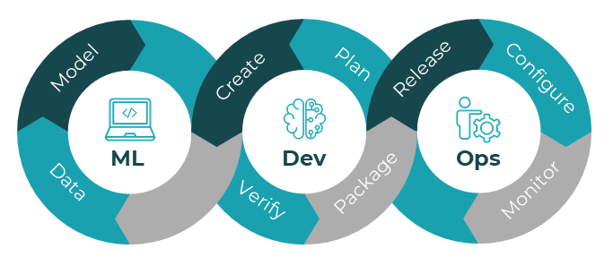

[header image]
In our previous articles (Part 1 and Part 2), we explored the exciting frontier where machine learning meets the physical world through edge devices. Today, I'm thrilled to share our prototype demo that simplifies the preparation and pre-training process for Edge Impulse projects.
Our current proof-of-concept and tool implementation will focus on vision-based TinyML. Future updates will include support for audio data, accelerometer readings, and other sensor fusion applications - creating a comprehensive edge AI development platform.
One of the biggest hurdles in deploying machine learning models on edge devices is efficient data collection. Before you can train a powerful model, you need quality data - and lots of it. This process can be tedious, especially when working with visual data from micro-controllers.
Many brilliant engineers and developers find themselves stuck in this preparation phase, spending countless hours manually capturing and organizing training data rather than focusing on model architecture and application development.
Having leveraged Edge Impulse extensively in the past—primarily for audio processing and sensor data projects—I can confidently say this platform revolutionizes TinyML development.
Edge Impulse elegantly streamlines the entire machine learning workflow for both beginners and industrial applications. By integrating core technologies like TensorFlow Lite while providing an intuitive interface for data collection, training, and deployment across diverse micro-controllers, it removes significant barriers to entry.
What truly sets Edge Impulse apart is its comprehensive API stack and remote management protocol, which we'll be utilizing as the foundation for our solution.
This powerful combination of accessibility and capability makes it the perfect platform for our edge AI implementation journey.
We're currently focused on ML Ops—think of it as DevOps specifically designed for machine learning projects. Just as DevOps streamlined software development, ML Ops brings that same efficiency to AI development by automating and optimizing the entire machine learning lifecycle. Whether you're a developer, business leader, or just AI-curious, ML Ops is the critical infrastructure that turns promising AI models into reliable, production-ready systems that deliver real value.

src: docs.edgeimpulse.com/docs/concepts/edge-ai-fundamentals/what-is-edge-mlops
We've developed a streamlined tool that makes camera data collection for Edge Impulse projects remarkably simple. Our solution leverages the affordable ESP32-CAM (xiao esp32-s3) module to create a powerful data collection server.
While various camera options exist in the edge AI ecosystem - including SIPEED modules, Arduino Nicla Vision, industrial-grade Protenta, and OpenMV cameras - we chose the ESP32-CAM for several compelling reasons:
Our ESP32-CAM Server was born from a real frustration: the tedious process of capturing, organizing, and labeling hundreds of images for edge AI training. After spending countless hours manually photographing objects, transferring images, and structuring datasets for an Edge Impulse project, I knew there had to be a better way.
The tool transforms this cumbersome process through an intuitive web interface:
This tool addresses critical gaps in the edge AI development workflow:
By addressing these pain points, we're enabling developers to focus on what truly matters: creating and refining innovative edge AI solutions that solve real-world problems across industries.
The entire project is open-source and available on GitHub. The repository includes:

In the next article of this series, I'll demonstrate the full workflow from data collection to deployment. We'll train a custom computer vision model using the data collected with our ESP32-CAM Server, optimize it for edge deployment, and flash it back to the same ESP32-CAM device - transforming it from a data collection tool into a standalone intelligent vision system.
We'll explore how this complete edge AI development cycle can be applied to real-world problems in manufacturing, agriculture, healthcare, and smart infrastructure - creating solutions that operate where the physical and digital worlds intersect.
Have you experimented with edge AI deployment? What challenges have you faced in the development process? I'd love to hear your experiences and thoughts in the comments below.
#EdgeAI #MachineLearning #IoT #ComputerVision #ESP32 #EdgeImpulse #EmbeddedSystems #AIEngineering